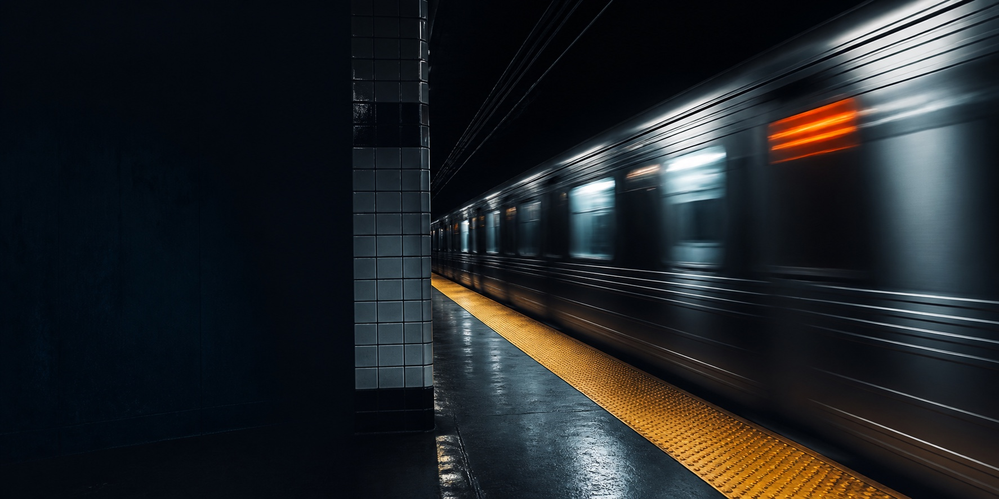
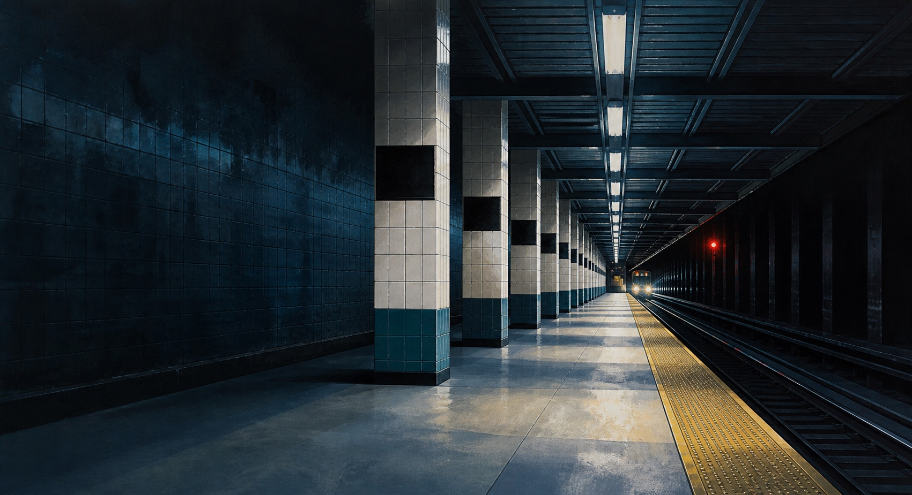
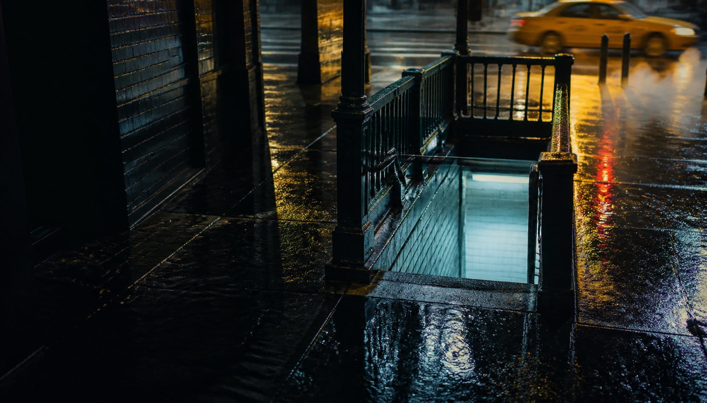
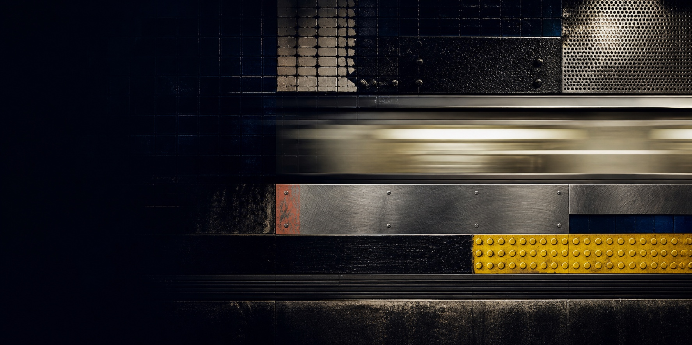

Core idea
The train supplies urgency and momentum. The yellow platform edge naturally leads toward the CTA.
NYC hero exploration
Four directions built around movement, fluorescent light, tile, steel, rain, and the specific feeling of New York after dark. No people. No circuit metaphor.
Direction 1 · Motion
A silver train cuts through the station as one long band of light. Fast, focused, and immediately NYC without leaning on landmarks.

NYC-first. Open to everyone.
Growth Circuit is a community for engineers, marketers, and builders who work on growth. We started with in-person events in New York City and grew from there.
The train supplies urgency and momentum. The yellow platform edge naturally leads toward the CTA.
Fast work, late nights, and a city that keeps moving. This is the most energetic direction.
The image is intentionally dark. Copy contrast and mobile cropping need to stay tightly controlled.
Direction 2 · Perspective
An empty platform stretches toward distant headlights. Repetition and perspective make the image feel structured, calm, and expectant.

NYC-first. Open to everyone.
Growth Circuit is a community for engineers, marketers, and builders who work on growth. We started with in-person events in New York City and grew from there.
The repeating columns create a visual system without drawing a literal circuit or diagram.
Quiet confidence, anticipation, and finding your way somewhere useful after dark.
This is the coldest option. Warmer buttons and event photography elsewhere would help balance it.
Direction 3 · Street level
Cool light rises from underground while taxi yellow and red reflections move across wet pavement. This combines subway specificity with the energy of the city above.

NYC-first. Open to everyone.
Growth Circuit is a community for engineers, marketers, and builders who work on growth. We started with in-person events in New York City and grew from there.
The stairway becomes an invitation. Light from below suggests a place worth entering.
Charged, cinematic, and unmistakably NYC. This has the richest emotional atmosphere.
Rainy New York can drift into movie-poster territory. The site typography should keep it grounded and contemporary.
Direction 4 · Abstraction
Tile, steel, tactile yellow, fluorescent light, and one blurred horizontal band. The materials carry the NYC feeling without showing a station scene.

NYC-first. Open to everyone.
Growth Circuit is a community for engineers, marketers, and builders who work on growth. We started with in-person events in New York City and grew from there.
The subway becomes a material palette rather than a location. This is the least literal direction.
An art-book cover or campaign system. Graphic, physical, and easier to own as a brand.
The NYC reference lands through texture and color. Some visitors may feel it before they consciously recognize it.
Last train is kinetic. Platform is precise. Rain entrance is emotional. Underground textures is the most ownable visual system. All four keep the community copy in the foreground and let NYC set the mood.